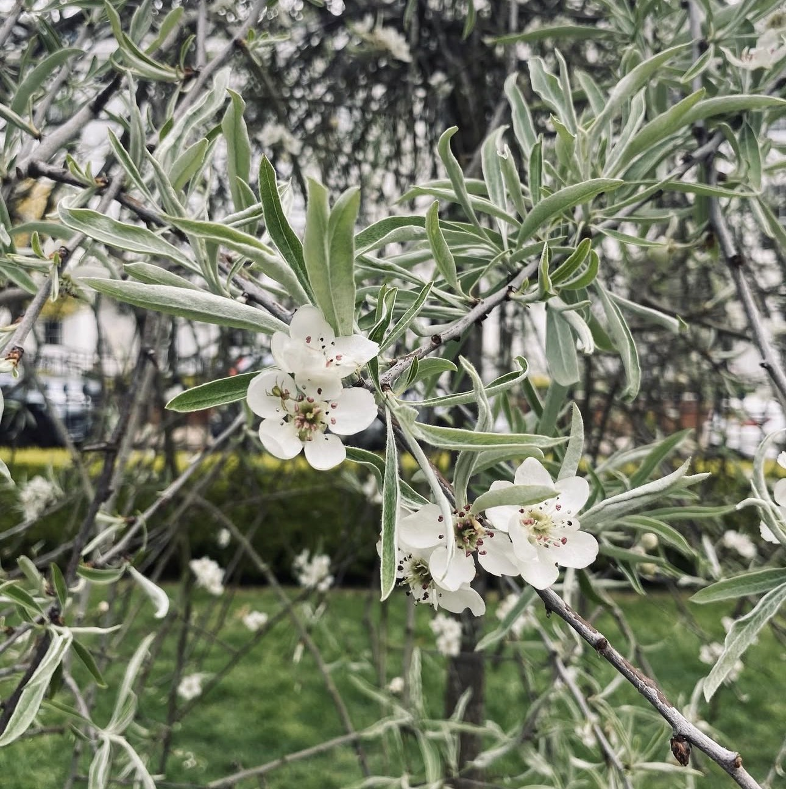
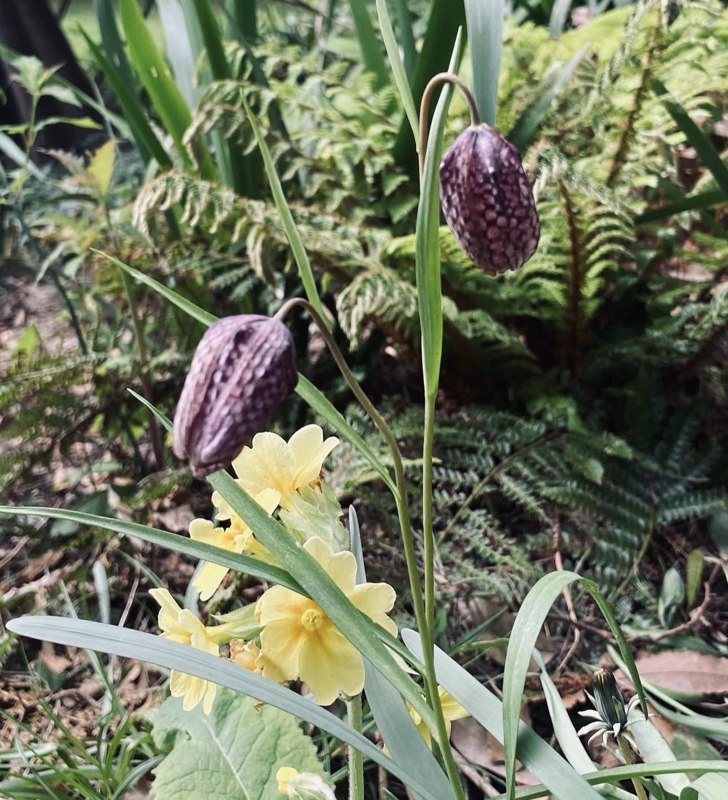
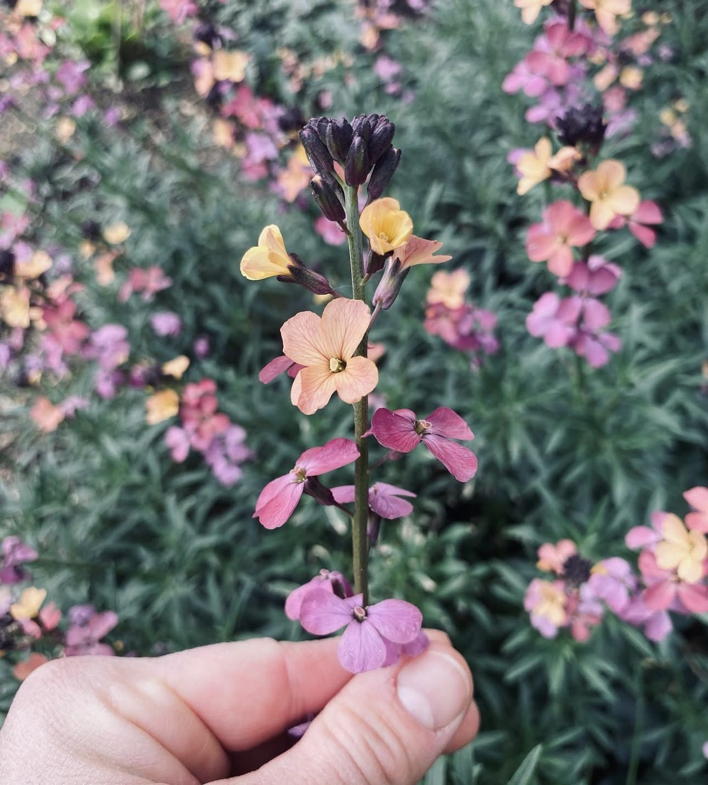
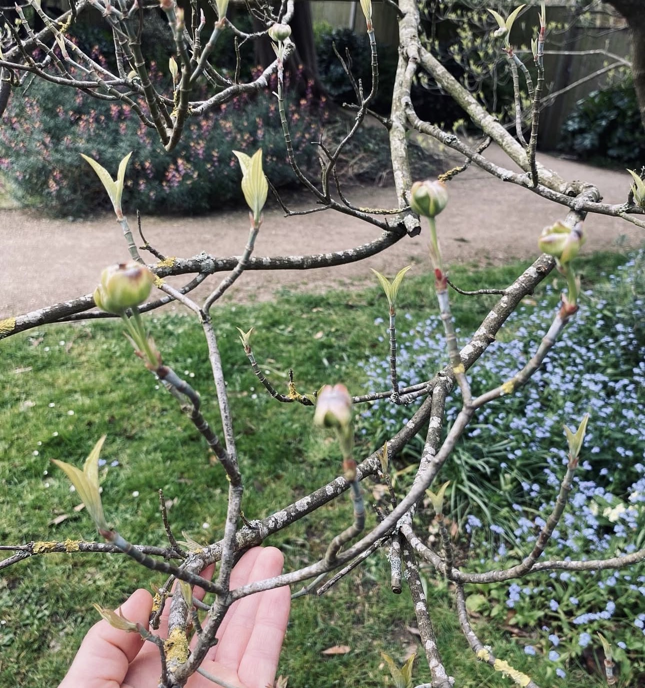
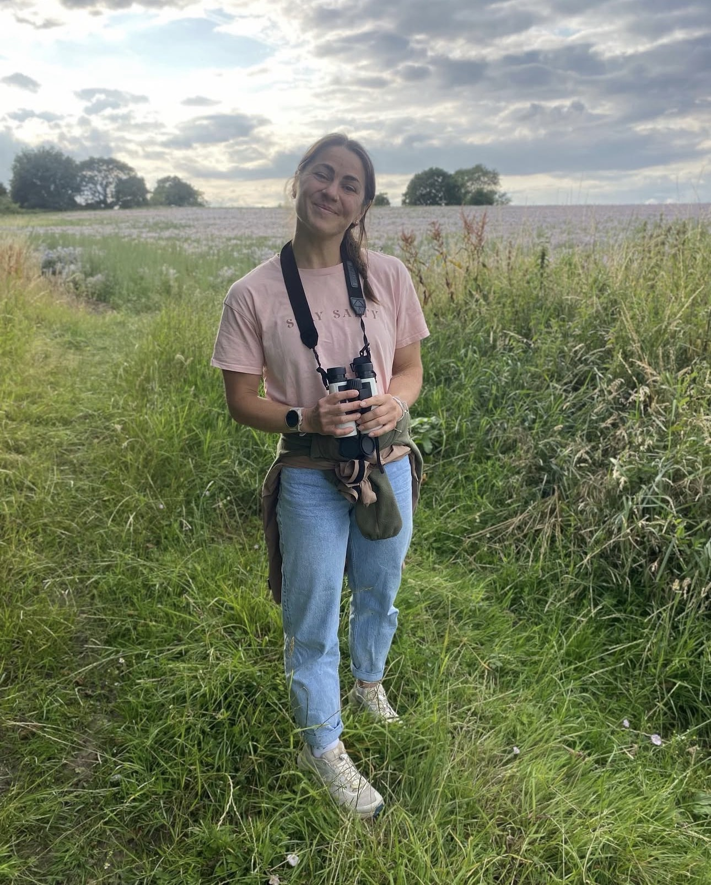

Hello, I'm Emelye.
I started Holistic Horticulture because I believe looking after a garden shouldn't mean reaching for a chemical every time something goes wrong — and that the best gardens are the ones their owners actually understand.
I'm RHS Level 2 qualified and have spent years getting my hands into other people's soil — helping nervous first-time gardeners, busy families who've just moved house, and people simply tired of a garden that never quite behaves. My approach is always organic, always patient, and always focused on teaching as much as doing.
The other half of my working life is spent coaching: I'm a European and UK CrossFit Champion, a qualified personal trainer, and a former sponsored athlete. Gardening is proper physical work — digging, lifting, kneeling, reaching — and I love bringing that side of me into the garden too, helping people move well and stay strong enough to actually enjoy it.
Outside of the garden, I'm pretty much always outdoors anyway — I'm a keen (some would say obsessive) bird spotter, binoculars rarely far from reach, and a bit of a soft touch for animals in need of rescuing. Add a strong coffee and I'm set for the day. It's really all the same love of nature wearing different hats: whether I'm watching for a yellowhammer in a hedgerow or helping a client's border come back to life, it's the same quiet thrill.
When I'm not elbow-deep in a border (or training), you'll usually find me testing a new composting method, foraging ideas from hedgerows, or planning next season's Potting Shed Sessions.
A holistic approach, in practice
Soil first
Healthy, living soil is the foundation of everything — feed the soil, and the plants largely look after themselves.
Chemical-free, always
No synthetic pesticides, herbicides or fertilisers. Just organic matter, patience, and the right plant in the right place.
Body & mind, not just borders
Gardening done well is physical, grounding and genuinely good for you — I teach all three sides of that, not just the planting.
Knowledge, shared openly
I'd rather teach you to recognise a problem than keep you dependent on me to fix it every time.
A few favourite moments






Let's talk about your garden
Whether you'd like ongoing care, a full redesign, or a Potting Shed Session of your own — I'd love to hear from you.
Get in touch